Charcoal, smoked glass, mint light, warm focus highlights. One visual pass across the existing Library. Screenshots use a local mock API; game names, people, activity and publishing codes are fixtures. Select any image for the full capture.
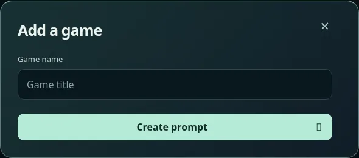
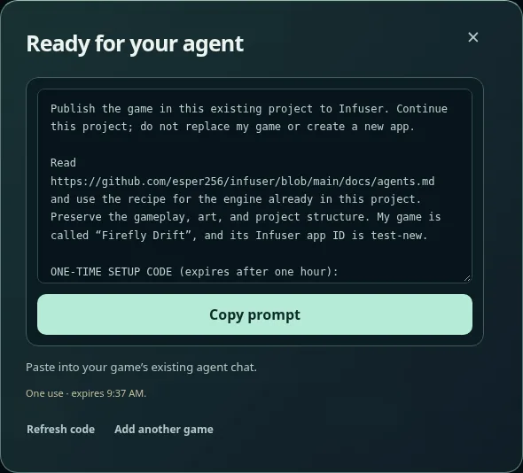
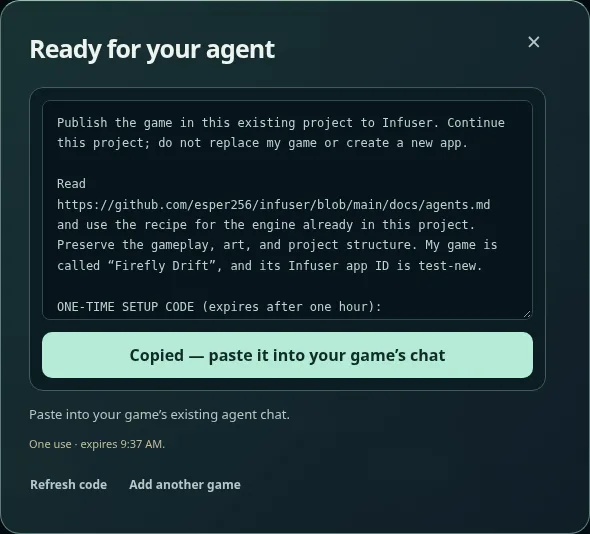
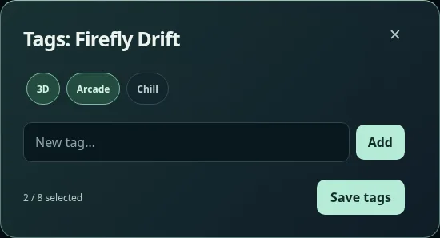
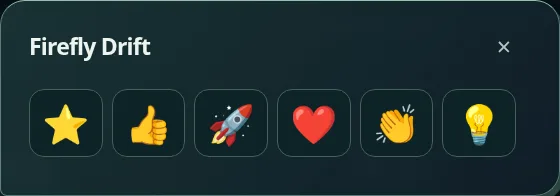
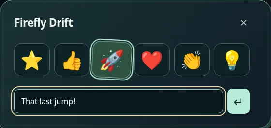
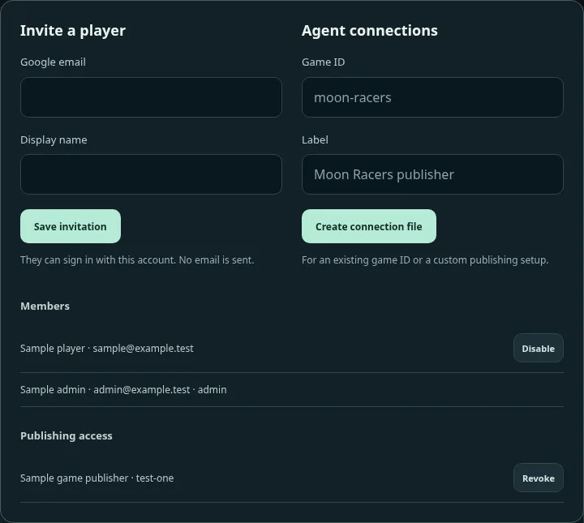
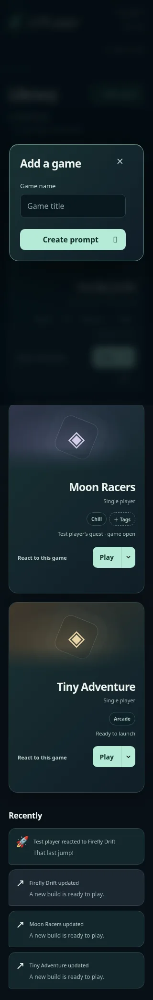
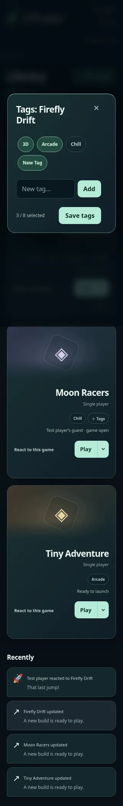
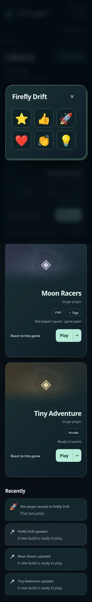
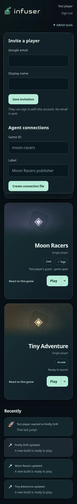
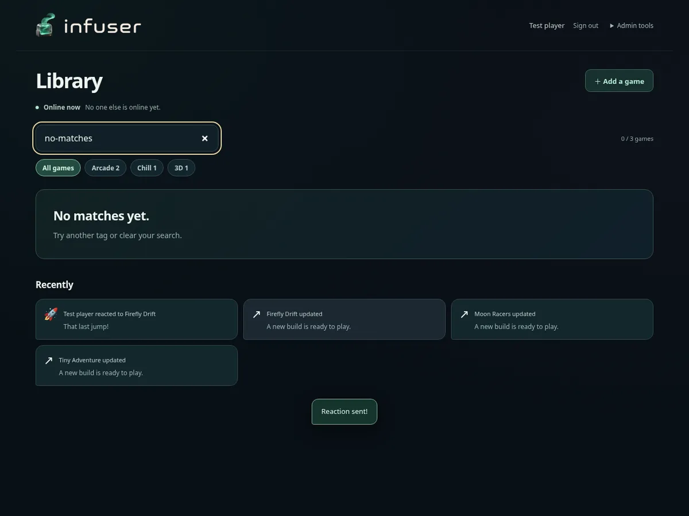
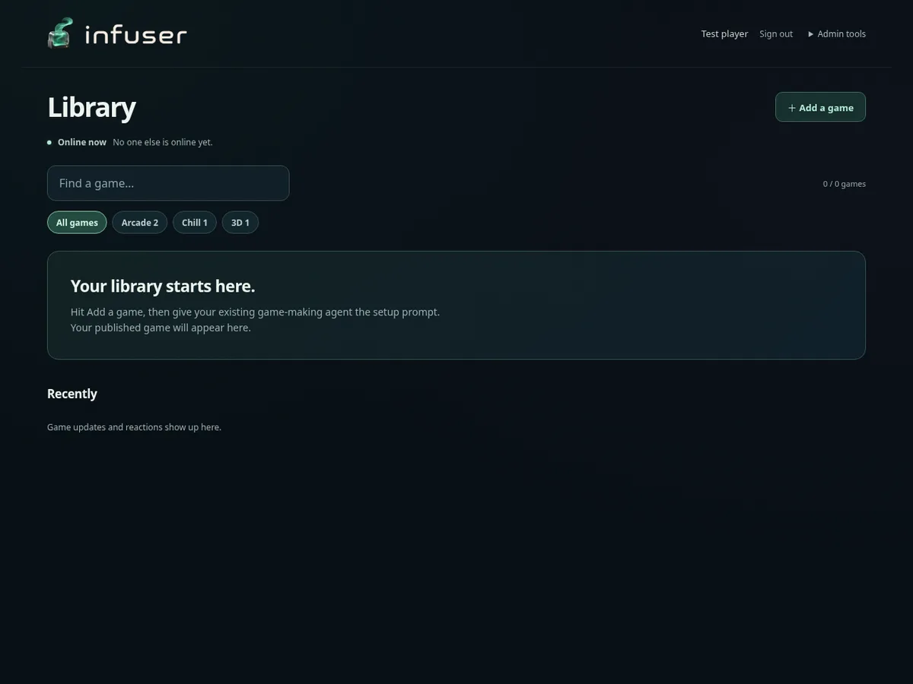
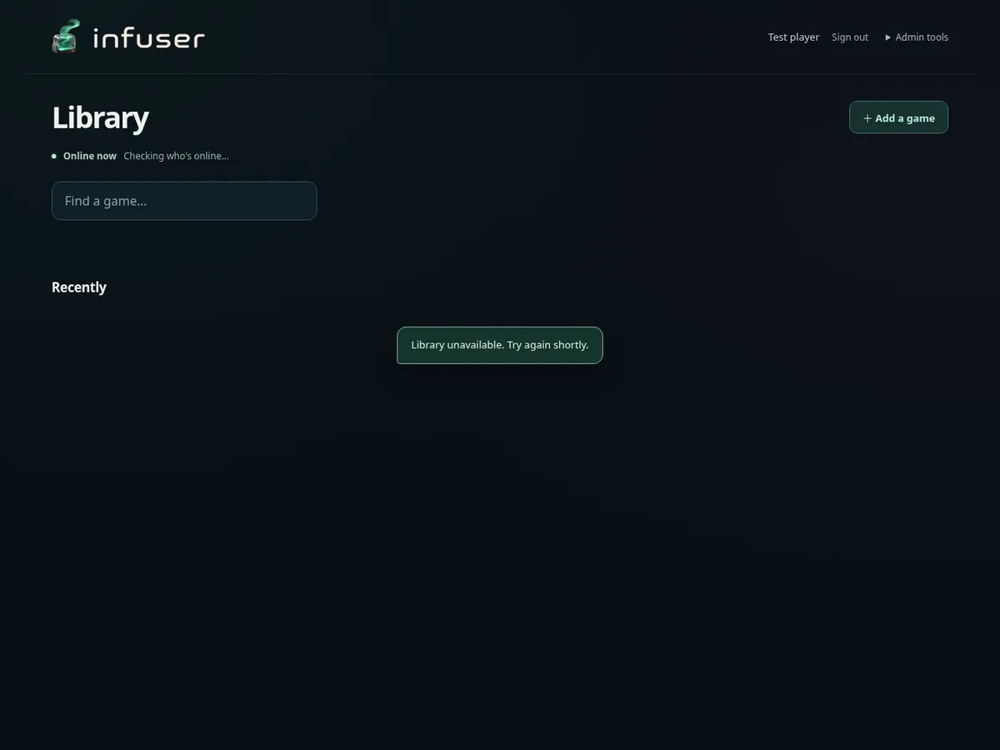
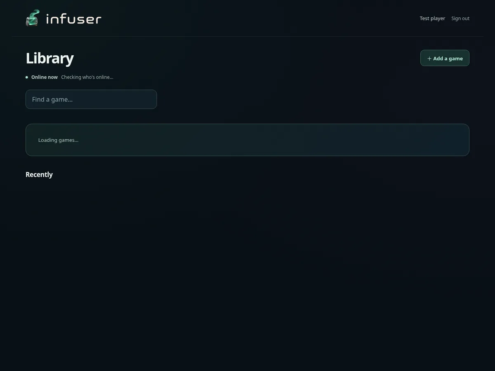
Nightglass option · placeholder art and creator. Click or tap the portrait in the interactive prototype. Author data and production wiring remain separate work.
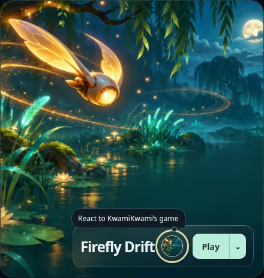
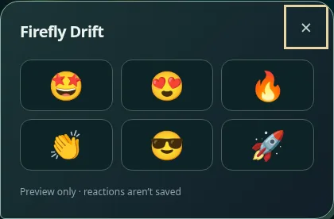
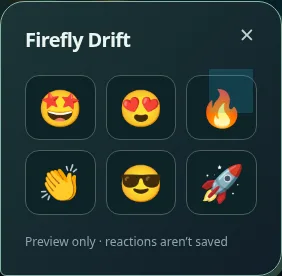